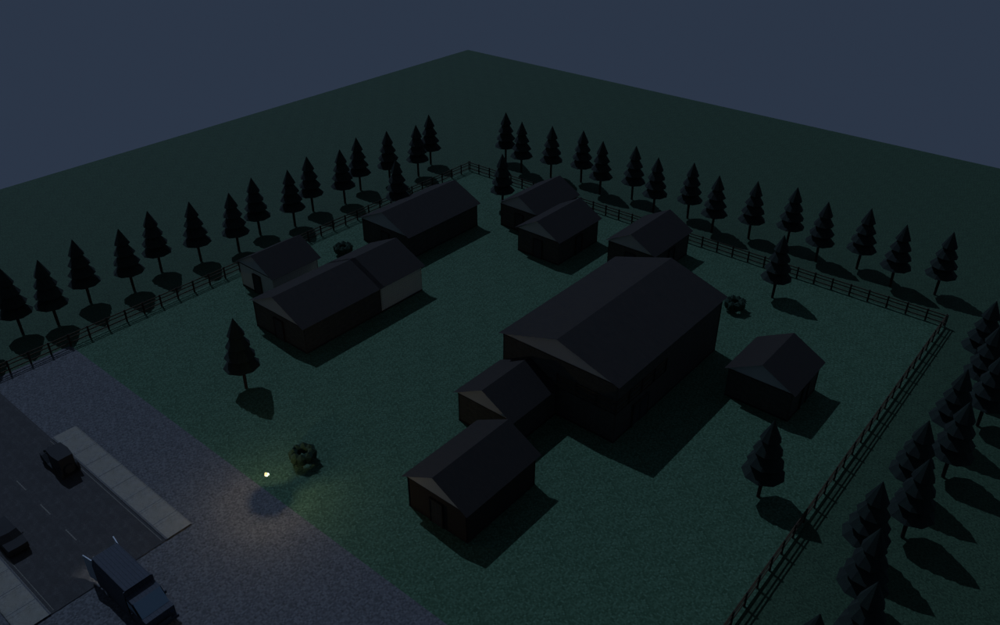
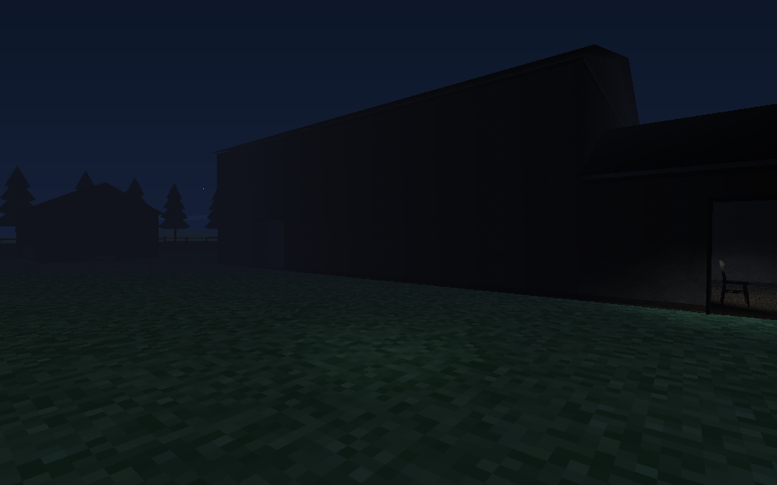
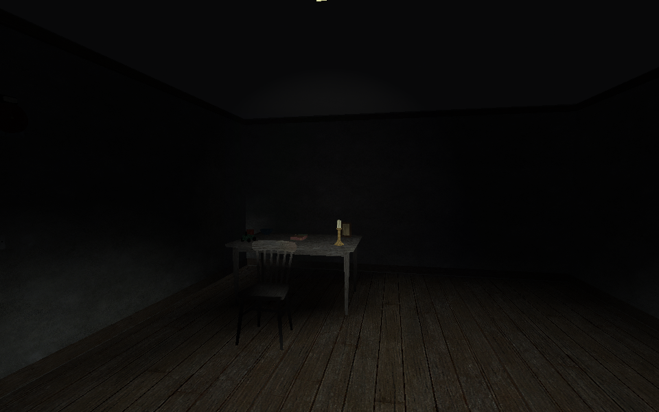
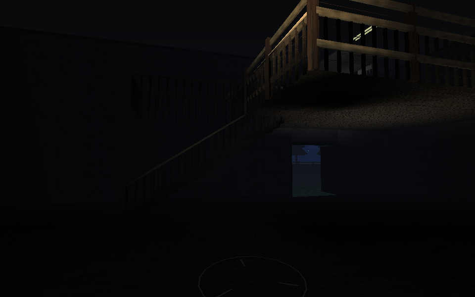
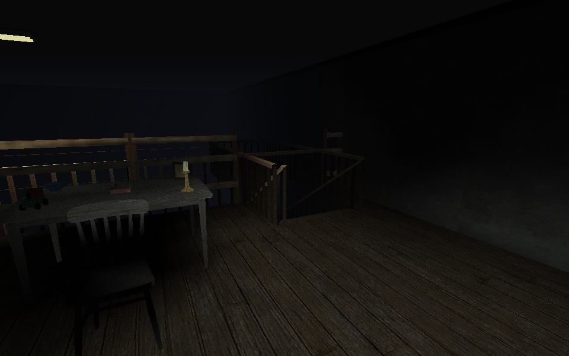
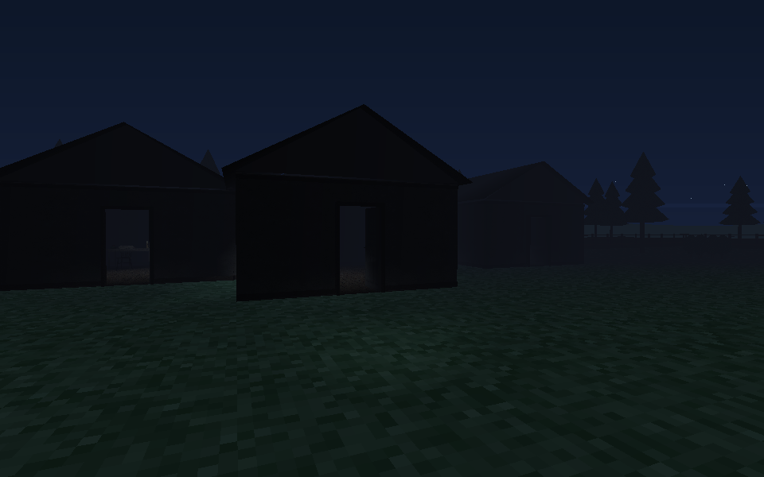
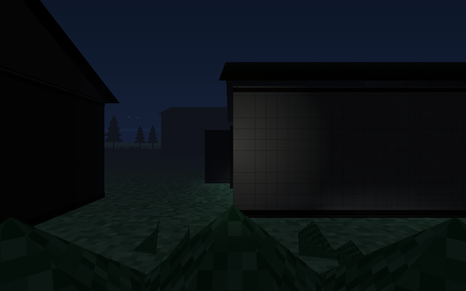
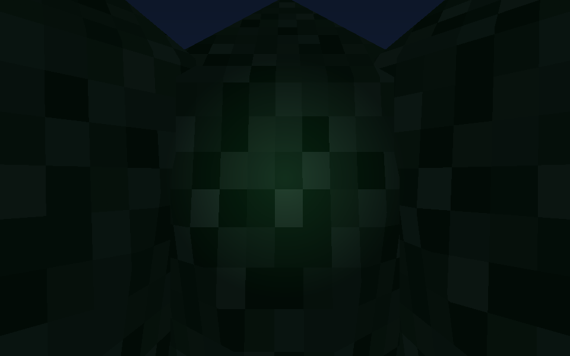

Blackpine first buildBlackpine Logging Camp — first graybox
Normal-sized working buildings, an exposed compound and only three shrub refuges. Development construction with tested physical routes; not unlocked as a production map.
Build notes and remaining gates · All 23 rough layouts

Editable scene overview from actual runtime geometry.
blackpine-01-yard-and-mill
blackpine-02-compact-cabin
blackpine-03-mill-and-stair
blackpine-04-loft-guard-and-return
blackpine-05-camp-spacing
blackpine-06-standing-shrub
blackpine-07-crouched-shrub